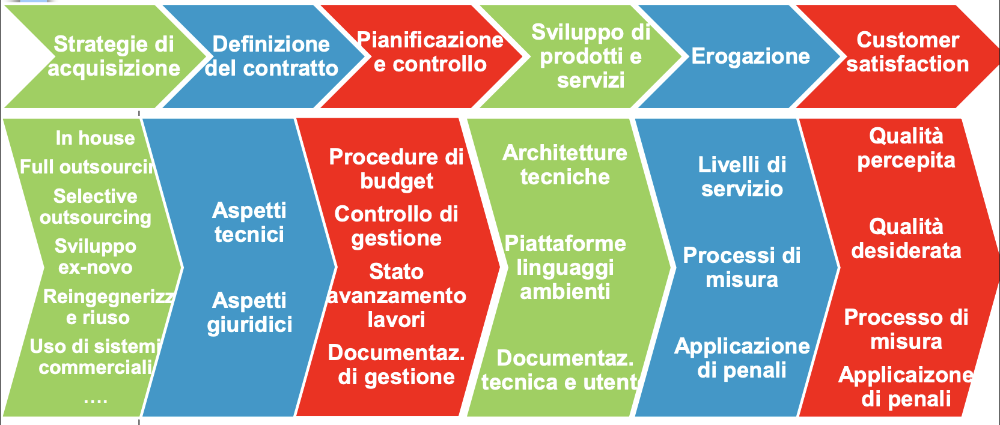
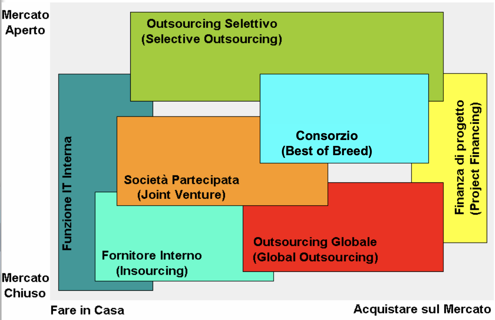
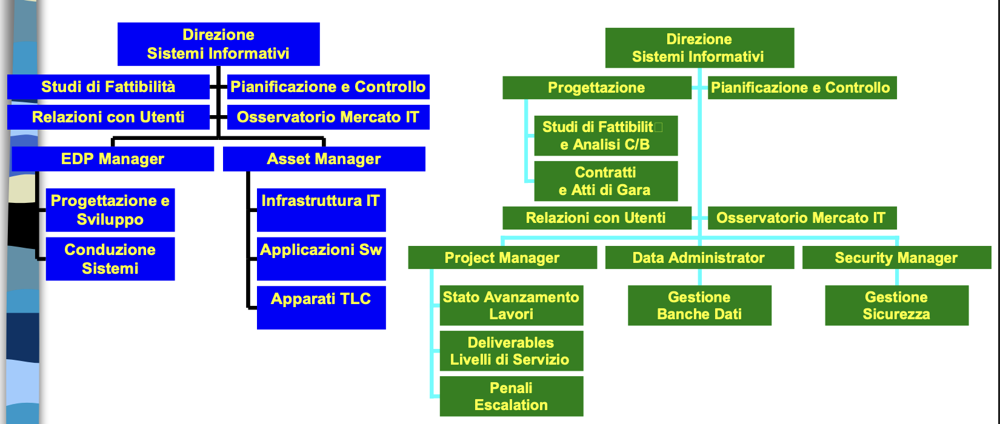
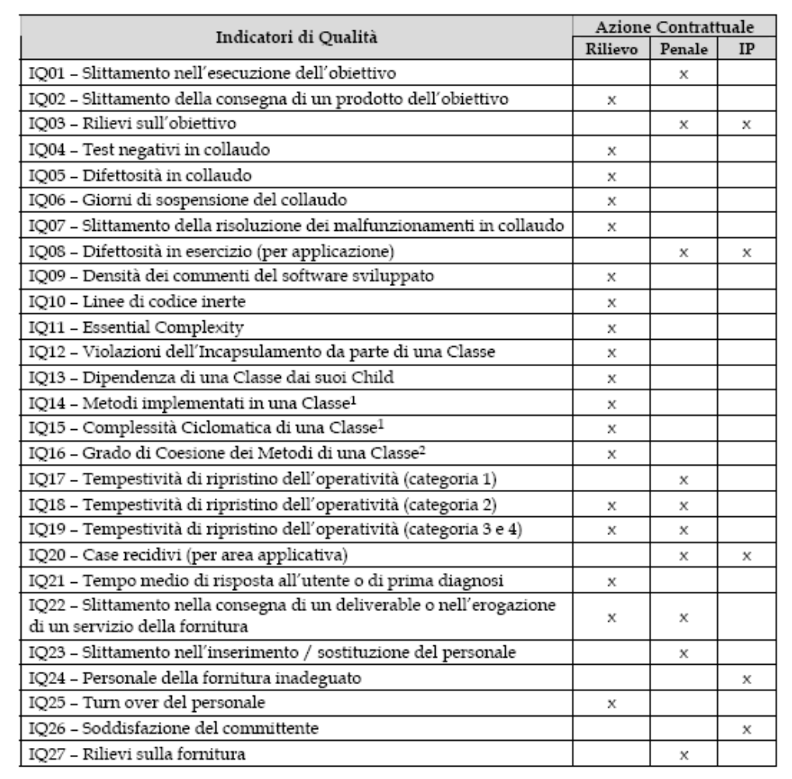

Per arrivare a mettere in campo un progetto ci sono diverse fasi
preparatorie che dobbiamo completare prima dello sviluppo.
Il ciclo di vita dei progetti approvati in fase di pianificazione
comprende le seguenti fasi principali:

.
In questo capitolo vediamo degli aspetti che devono essere definiti
giuridicamente bene.
Strategie di
acquisizione: Make or Buy?
La realtà è molto complessa, per commentarla è utile schematizzare,
ma con spirito critico:
Quasi nessuno fa tutto in casa
L’affidamento totale all’esterno è raro (e se estremo e non
governato è molto pericoloso e potenzialmente inefficace e
inefficiente)
È necessario distinguere i termini:
Acquisto sul mercato di un bene o servizio:
accezione generica riferita alla scelta di acquisire da terzi (Buy)
invece che realizzare internamente (Make) un bene o un servizio
Esternalizzazione (outsourcing): presuppone una
qualche forma di stabilità del rapporto di “collaborazione” tra
l’impresa e il terzista con una prospettiva di medio termine
Strategie di
acquisizione: fare o affidare?
L’outsourcing ha luogo quando un’organizzazione affida tramite un
accordo contrattuale a un fornitore esterno la responsabilità di una o
più funzioni o servizi specializzati precedentemente svolti
internamente.
Vantaggi:
Riduzione dei costi di gestione: l’outsourcer riesce a conseguire
profitti per effetto delle sue competenze specialistiche e delle
economie di scala
Benefici finanziari: l’outsourcing evita la necessità di
investimenti in beni immobili
Aumento del livello qualitativo del servizio
Accesso a tecnologie avanzate
Possibilità di incrementi di capacità a richiesta
Outsourcing: due
coordinate per classificarlo
In base alla missione affidata al Fornitore:
Information Technology Outsourcing (ITO)
Business Process Outsourcing
In base all’ampiezza del mandato conferito al
Fornitore:
Full Outsourcing
Selective Outsourcing
Information Technology
Outsourcing
Outsourcing delle attività di sviluppo, esercizio, manutenzione dei
Sistemi Informativi e delle risorse informatiche.
Può essere (seconda coordinata):
Full Outsourcing
Selective Outsourcing (spesso “Multisourcing”)
Tipi di servizi
affidati in outsourcing
Application management: Manutenzione e conduzione
patrimonio applicativo software
Application service provision: Servizi di
consulenza
Direzione lavori, monitoraggio, consulenza e
formazione
Desktop management: Gestione delle postazioni di
lavoro, assistenza, controllo, manutenzione HW e SW
Network outsourcing: Servizi di connettività e
relativa gestione delle correlate apparecchiature di rete
Facility management: Gestione delle infrastrutture
HW (presso locali del committente o del fornitore), spesso con disaster
recovery e business continuity
System integration
Help desk, CRM: Infrastrutture e anche servizio
(BPO)
Business Process Outsourcing
(BPO)
Outsourcing di processi operativi dell’organizzazione, di solito
“strumentali” e non “core”:
Personale (Human Resources Management)
Contabilità e finanza
Assistenza agli utenti (Help Desk, Call Center)
Relazioni con gli utenti (Customer Relationship Management)
Acquisti e forniture (Supply Chain Management)
Commercio elettronico su internet (e-Commerce)
Alcuni casi di servizi “core”, con (nel settore pubblico) rapporti
“stretti” di partnership fra amministrazione e fornitore.
Scenario tradizionale vs BPO
Scenario tradizionale:
Responsabile del servizio → Fornitore ICT
Responsabile del servizio → Fornitore del servizio
Fornitore del servizio → Utente del servizio
Scenario BPO:
Responsabile del servizio → Fornitore BPO → Utente del servizio
In base all’ampiezza del mandato conferito al
Fornitore:
Full (Global) Outsourcing
Selective Outsourcing

.
Funzione IT Interna
La funzione IT è assegnata ad una struttura dell’organizzazione che
fornisce ed implementa nuovi servizi ed architetture IT mediante
progetti interni.
La funzione IT può comunque acquistare/affidare all’esterno le
applicazioni, infrastrutture, HW.
Insourcing
La funzione IT è delegata ad una società di servizi separata
dall’organizzazione a cui fornisce servizi ma da essa posseduta (e che
di solito non opera sul mercato) oppure è comunque formalizzato o quasi
il rapporto fra struttura IT e altre strutture.
Fornisce ed implementa nuovi servizi ed architetture IT sulla base di
contratti informali (controllo di gestione come centro di ricavi) o
contratti di servizio (definizione di tariffe per i servizi).
Può a sua volta rivolgersi al mercato.
Esempio tipico: Consip
http://www.consip.it/on-line/Home/Chisiamo/Lanostramissione/Modello.html
Nel caso di Business Process Outsourcing si parla di Captive
company: società “prigioniera” azienda fondata da altra azienda
allo scopo di eseguire operazioni per conto dell’azienda madre (es. FGA
Capital gestisce il processo di finanziamento per la società FGA - Fiat
Group Automobiles).
Selective Outsourcing
La funzione IT è delegata a più fornitori esterni che forniscono ed
implementano nuovi servizi ed architetture IT sulla base di più
contratti di durata limitata, 3-5 anni:
Data center (Facility Management)
Reti informatiche e/o telefoniche (Network Outsourcing)
Desktop e sistemi distribuiti (Desktop Outsourcing)
Applicazioni e procedure (Application Outsourcing)
L’organizzazione attua un approccio tattico per creare un ambiente
competitivo (costi, capacità, innovazione), ma con complessità
gestionale accresciuta.
Full Outsourcing
La funzione IT è delegata ad un unico fornitore esterno che fornisce
ed implementa nuovi servizi ed architetture IT sulla base di un unico
contratto di servizio.
L’organizzazione intende creare una partnership strategica con
l’outsourcer.
È il modello classico di outsourcing: il contratto copre la maggior
parte delle esigenze IT dell’organizzazione e ha una lunga durata, 5-10
anni.
La realtà è spesso intermedia, quindi non si ha “full” outsourcing,
sono coinvolti più servizi in un’unica collaborazione.
Joint Venture (Società
partecipata)
La funzione IT è delegata ad una società di servizi separata e
indipendente dall’organizzazione a cui fornisce servizi, in
partecipazione con un fornitore.
La maggioranza delle quote può essere dell’uno o dell’altro, a
seconda che si voglia privilegiare il controllo del committente o la
responsabilità e l’impegno del fornitore.
Fornisce ed implementa nuovi servizi ed architetture IT sulla base di
un contratto di servizio (definizione di tariffe per i servizi).
Consorzi e RTI
La funzione IT è delegata ad un consorzio (stabile o temporaneo)
costituito da più fornitori esterni che forniscono ed implementano nuovi
servizi ed architetture IT sulla base di un unico contratto di
servizio.
L’organizzazione intende creare una partnership strategica con il
Consorzio.
Complessità gestionale maggiore di quella del Full
Outsourcing:
Difficoltà di omogeneizzare le diverse culture, conoscenze, sistemi
qualità, dei fornitori costituenti il Consorzio
Spesso si tratta di un RTI (raggruppamento
temporaneo di imprese) cioè di una struttura costituita per l’occasione
(un progetto?) e non permanente.
Strategie di
acquisizione, comparazione
Ogni forma di acquisizione presenta “pro” e “contro”
Non esiste una soluzione migliore in assoluto
La scelta non deve necessariamente essere effettuata una volta per
tutte, può essere rivista:
Sulla base di una strategia di approccio progressivo
Per adattarsi al mutare di condizioni interne o esterne
all’organizzazione
Outsourcing: pro e contro,
in generale
A favore:
Attenzione al core-business
Mancanza di risorse specializzate
Riduzione dei tempi, soprattutto per rapidi cambiamenti
tecnologici
Maggiore flessibilità nell’offerta di servizi (ad esempio, rispetto
all’orario di lavoro)
Riduzione di costi
Contro:
Perdita di controllo, con conseguenti rischi
Riduzione del potere negoziale a medio termine
Demotivazione personale IT interno
Outsourcing globale
A favore:
Interfaccia unica
Unitarietà e integrazione delle componenti
Riduzione costi e tempi di acquisizione
Possibile semplificazione nella gestione del contratto (uno
solo)
Contro:
Limitata “ottimizzazione” nella scelta
Perdita di controllo
Riduzione del potere negoziale e lock-in
Demotivazione personale IT interno
Rischio di insuccesso globale
Complessità del singolo contratto
Outsourcing selettivo
A favore:
Clima di competizione fra i fornitori
Riduzione costi
Ottimizzazione della scelta
Controllo del committente su coordinamento e integrazione
Riduzione dei singoli tempi di acquisizione
Possibile semplificazione della gestione dei singoli contratti
Minore rischio di insuccesso globale
Contro:
Aumento della complessità di gestione dei molti contratti
Possibile “scarica barile”
Difficoltà di integrazione
Impatto Organizzativo
I servizi IT sono sempre più una combinazione di attività interne ed
esterne.
Le interazioni Cliente-Fornitore sono di gran lunga più complesse di
quanto descritto in un contratto:
In una organizzazione solo parte delle interazioni e dei processi
sono oggetto di una definizione formale
Esternalizzare i servizi informatici non significa sopprimere
la funzione IT interna, anzi la responsabilità finale del
management rimane al committente.
La funzione
IT nei casi estremi: make e outsourcing

.
Make (sviluppo interno):
EDP Manager
Studi di Fattibilità
Pianificazione e Controllo
Relazioni con Utenti
Osservatorio Mercato IT
Progettazione e Sviluppo
Conduzione Sistemi
Infrastruttura IT (Applicazioni SW, Apparati TLC)
Asset Manager
Direzione Sistemi Informativi
Outsourcing:
Studi di Fattibilità e Analisi C/B
Contratti e Atti di Gara
Progettazione
Pianificazione e Controllo
Relazioni con Utenti
Osservatorio Mercato IT
Stato Avanzamento Lavori
Deliverables
Livelli di Servizio
Penali
Escalation
Project Manager
Gestione Banche Dati (Data Administrator)
Gestione Sicurezza (Security Manager)
Direzione Sistemi Informativi
Evoluzione delle competenze
Con l’outsourcing la funzione IT è più una unità di governo e
gestione che di servizio.
Diminuzione di:
Operativi e tecnici poco specializzati
Operatori
Programmatori
Aumento di:
Manager e tecnici molto specializzati
Capi progetto
Analisti
Sistemisti
Attenzione: Spesso si pensa di utilizzare
l’outsourcing per supplire alle carenze di personale, però l’outsourcing
richiede meno personale, ma di livello elevato.
Compiti e Responsabilità
Funzione IT
Progettazione:
Studi di fattibilità e rappresentazione dei requisiti
Stima investimenti analisi costi/benefici
Contratti ed atti di gara
Pianificazione e Controllo:
Pianificazione informatica coerente alla missione
Definizione delle priorità dei progetti
Verifica del raggiungimento degli obiettivi
Relazione con gli utenti:
Acquisizione dei requisiti e dei bisogni reali
Verifica della soddisfazione degli utenti
Osservatorio sul mercato dell’IT:
Controllo sulle soluzioni proposte dal Fornitore
Contenimento del rischio di perdita di controllo
Gestione dei progetti (Project Management):
Gestione dei rapporti con il Fornitore
Budget e controllo di gestione
Verifica dello stato avanzamento lavori
Accettazione/collaudo dei prodotti
Misura dei livelli di servizio
Segnalazione tempestiva di rilievi e non conformità
Proposta di azioni correttive o preventive
Monitoraggio
Gestione delle banche dati (Data Administration & Data
Architect):
Sorvegliare la qualità dei dati
Gestione della sicurezza (Security Management):
Sorvegliare l’applicazione delle politiche di sicurezza
Verificare il rispetto della normativa vigente
Fattori Chiave di Successo
Scelta della Strategia di Sourcing
Approccio progressivo
Adattarsi al mutare di condizioni interne o esterne
Selezione del Fornitore
Ricerca delle garanzie necessarie a contenere i rischi
Le necessità informatiche portano alla necessità di realizzare un
software applicativo per:
Nuove esigenze di automazione di processi non coperti dal sistema
informatico
Adeguamento di applicazioni esistenti
MAC (Manutenzione correttiva)
MEV (Manutenzione evolutiva)
Le nuove esigenze di automazione possono essere risolte con modalità
diverse:
Sviluppo di programmi ad hoc
Riuso di programmi ad hoc sviluppati per altre PA (solo per le
PA)
Utilizzo di sistemi informatici proprietari con ricorso a licenza
d’uso
Utilizzo di sistemi informatici open source
Combinazione dei punti precedenti
Strategie di
realizzazione: Sviluppo ad hoc
Sviluppo di programmi ad hoc:
Pro (+):
Utile quando le funzioni da informatizzare sono peculiari della
specifica azienda o dove i sistemi commerciali esistenti richiedessero
un notevole sforzo di adeguamento/integrazione
Maggiore possibilità di personalizzazione
Contro (-):
Considerato retaggio degli anni ’80
Maggiore incertezza sui tempi e costi di realizzazione
Riuso di programmi ad hoc sviluppati per altre PA (Solo per
le PA):
Le pubbliche amministrazioni sono obbligate a condividere con le
altre PA le applicazioni sviluppate.
Pro (+):
Utile (tempi, costi, rischi di progetto, ecc.) quando le funzioni da
informatizzare sono simili a quelle già realizzate
Impatti: Sul modello di business delle software
house produttrici del software che dovranno orientarsi al mercato delle
personalizzazioni.
Strategie di
realizzazione: Open Source
Utilizzo di sistemi open source:
Pro (+):
Basso costo iniziale e maggior controllo sul costo complessivo
d’esercizio (TCO)
Maggiore indipendenza dai fornitori
Può determinare una maggiore trasparenza della soluzione grazie
all’accesso ai sorgenti
Maggiore possibilità di personalizzazione (a quale costo?)
Contro (-):
Ridotta compatibilità con standard commerciali quando questi
rappresentano lo “standard de facto”
Supporto non sempre disponibile
Instabilità di mercato e potenziale mancanza di una evoluzione del
sistema nel tempo
Strategie di
realizzazione: Sistemi proprietari
Utilizzo di sistemi proprietari con ricorso a licenza
d’uso:
Pro (+):
Rispetto al software open source fornisce normalmente una maggiore
garanzia in termini di affidabilità e performance
Può essere necessario per compatibilità con altre soluzioni già
presenti in azienda
Considerazioni:
Rispetto a soluzioni open source va comunque valutato il reale TCO
(Total Cost Ownership) anche considerando i rischi legati a mancanza di
supporto adeguato, manutenzione correttiva ed evolutiva
La gestione di progetto
.
Contratto
Lo strumento fondamentale per la gestione di una fornitura:
Contratto fra il responsabile del servizio (“committente”) e il
fornitore ICT (art. 1321 Codice Civile): Accordo di due o più
parti per costituire, regolare o estinguere tra loro un rapporto
giuridico patrimoniale.
Tipi:
Contratto d’appalto (art. 1655 C.C.)
Contratto d’opera (art. 2222 C.C.)
Contratto di compravendita (art. 1472 C.C.)
Contratto d’appalto (Art. 1655 C.C.):
L’appalto è il contratto con il quale una parte assume con
organizzazione dei mezzi necessari e con gestione a proprio rischio, il
compimento di una opera o di un servizio verso un corrispettivo in
denaro.
Quello che a noi interessa maggiormente.
Caratteristiche:
Organizzazione di impresa
Rischio
Autonomia dell’appaltatore
Contratto d’opera (Art. 2222 C.C.):
Prestazione di lavoro personale dell’obbligato
Contratto di compravendita (Art. 1472 C.C.):
Cessione/acquisizione di una cosa
Contratti per vari tipi di
forniture
In un contratto possono esserci più di una di queste forniture:
Fornitura di apparecchiature ICT (server, postazioni di lavoro,
memorie, stampanti e altre periferiche, dispositivi di rete, …)
Fornitura chiavi in mano di sistema ICT completo
Locazione di apparecchiature ICT
Locazione di sistema ICT completo
Licenza d’uso di programmi SW (con ev. personalizzazione)
Sviluppo di SW (per vendita o licenza)
Outsourcing di servizi ICT
Spesso una combinazione
Vedi anche “Dizionario delle classi di fornitura” sul sito del
corso.
Visione manageriale (non
burocratica)
Un contratto ha l’obiettivo di soddisfare entrambe le parti (ed
eventuali terzi interessati, che supponiamo comunque rappresentati).
L’obiettivo quindi del contratto è soprattuto manageriale, se non
facciamo un contratto equo, costruiamo un rapporto sbilanciato che non
andrà a buon fine. Dietro al contratto c’è il progetto quindi l’attività
lavorativo vede due parti di cui una ha troppo potere. Si cerca di
arrivare in fondo al progetto senza litigare per arrivare alla fine
senza litigare. Se non si finisce allora entrambe le parti hanno
fallito.
Se i risultati non vengono raggiunti, entrambi hanno fallito.
Quindi un contratto deve:
Definire, in modo cooperativo tra le parti, le prestazioni in
termini di contenuti, costi, qualità, responsabilità
Eliminare le ambiguità nel rapporto tra le parti e prevenire le
difficoltà e le situazioni anomale. Spesso contratti che appena fatti
sembrano del tutto chiari, a distanza di tempo possono creare ambiguità.
Infatti è davvero difficile arrivare ad un contratto davvero non
ambiguo.
Ma non può pretendere di “prevedere tutto” in dettaglio
Quindi deve specificare non solo obblighi e impegni ma anche
procedure e regole di relazione.
Il contratto diventa attivo al momento della firma.
In tutti i contratti c’è sempre la clausola che il lavoro deve essere
svolto a regola d’arte: deve essere fatto bene, ma il ‘Fatto bene’ sarà
scelto un pò a posteriori perchè il mio fatto bene e il tuo fatto bene
non sono uguali. Per i software e si va in tribunale per questa ragione
si prendono dei consulenti tecnici di parte e di ufficio che avranno una
loro opinione.
Questo per dire che non tutto può essere definito alla stesura del
contratto perchè ci sarà sempre qualcosa che non si potrà definire del
tutto prima del progetto.
Gestione dei contratti
Il successo di un contratto dipende da molti fattori tra cui:
Le competenze tecniche e legislative dei suoi estensori
Le competenze tecniche e manageriali del personale preposto al suo
governo durante tutto il ciclo di vita
Il contratto rappresenta il principale strumento a disposizione delle
parti per evitare le ambiguità nel loro rapporto. Un contratto ben
strutturato facilita le attività degli organi preposti al governo del
contratto stesso:
Comitato guida (con rappresentanti delle parti)
Direzione dei lavori (rappresentante del committente per
l’interazione con il fornitore)
Monitoraggio (controllo durante il ciclo di vita).Ci sono anche dei
gruppi di monitoraggio che ispezionano in itinere il lavoro. Monitora
tempi e modi di lavoro mentre il collaudo verifica la funzionalità del
progetto. Quindi vanno a vedere cose diverse.
Collaudo (verifica dei prodotti), ad esempio attraverso le UAT.
Certificazioni di qualità (per garantire trasparenza e tracciabilità
delle attività del fornitore) che fanno delle ispezioni anche loro.
Se ci sono situazioni anomale si cerca di rimediare non uscendo dai
termini contrattuali: andare in tribunale è lungo e dispendioso.
Contratti: fasi
Impostazione (definizione oggetto e strategia di
acquisizione), articoli e flussi di lavoro
Negoziazione (definizione del contratto), nel
settore pubblico sostanzialmente attraverso gare, vedremo i dettagli più
avanti. Le due parti si rimbalzano il contratto richiedendo modifiche.
In caso di innovazione e quindi non si sa la scoperta che verrà fuori di
solito si possono pensare ai dettagli più avanti perchè non si sa che
scoperta di innovazione verrà fuori.
Stipula, ovvero la firma di questo
Attuazione (governo del contratto), diventa
attivo
Soggetti
coinvolti nelle attività contrattuali
(Non dobbiamo sapere la seguente lista a memoria ma ci basta andare a
pensare a cosa può essere utile per il committente e il forntore)
Per il committente (chi compra):
Dirigenti implicati nella definizione delle scelte strategiche. In
linea con l’innovazione e la strategia dell’azienda
Personale della funzione acquisti
Personale della funzione legale, l’avvocato deve verificarne la
correttezza dal punto di vista legale
Personale della funzione sistemi informativi, deve capire se
tecnicamente quello che vogliamo è quello che ci serve
Personale utente dei sistemi informativi, per capire se quello che
compriamo è coerente con quello che dobbiamo farcene.
Componente legale, economica, strategica e funzionale
Per il fornitore (chi vende):
Dirigenti implicati nella definizione delle offerte
Personale della funzione commerciale
Personale della funzione legale
Personale della funzione che eroga i servizi ICT
Personale della funzione di assicurazione qualità
Soggetti coinvolti per il
committente
Dirigenti implicati nella definizione delle scelte
strategiche:
Responsabili della missione istituzionale e delle politiche
attuative
Responsabili delle strategie di acquisto
Responsabili dei sistemi informativi automatizzati
Responsabili degli utenti dei sistemi informativi automatizzati
Personale della funzione acquisti:
Partecipante a gruppi di lavoro per la realizzazione di atti di
gara
Partecipante a commissioni di gara
Direttore dei lavori (Project manager)
Responsabile del controllo di gestione
Partecipante a commissioni di collaudo
Personale della funzione legale:
Partecipante a gruppi di lavoro per la realizzazione di atti di
gara
Partecipante a commissioni di gara
Personale della funzione sistemi informativi:
Partecipante a gruppi di lavoro per la realizzazione di studi di
fattibilità e atti di gara
Partecipante a commissioni di gara
Direttore dei lavori
Partecipante a gruppi di monitoraggio
Partecipante a commissioni di collaudo
Personale utente dei sistemi informativi:
Partecipante a gruppi di lavoro per la realizzazione di studi di
fattibilità e atti di gara
Partecipante a commissioni di gara
Partecipante a commissioni di collaudo
Soggetti coinvolti per il
fornitore
Dirigenti implicati nella definizione delle
offerte:
Responsabili marketing
Responsabili commerciali
Responsabili legali
Responsabili dell’assicurazione e controllo qualità
Responsabili dell’erogazione dei servizi
Personale della funzione commerciale:
Partecipante a gruppi di lavoro per la realizzazione di offerte
Responsabile del marketing del settore di mercato pubblica
amministrazione
Responsabile del cliente e/o contratto (Account manager)
Personale della funzione legale:
Partecipante a gruppi di lavoro per la realizzazione di offerte
Personale della funzione che eroga i servizi
ICT:
Partecipante a gruppi di lavoro per la realizzazione di studi di
fattibilità e offerte
Responsabile del progetto (Project manager)
Responsabile del controllo di gestione del progetto (Project
controller)
Responsabile del controllo qualità e dei collaudi interni (Quality
controller)
Responsabile dell’erogazione di specifici servizi ICT
Personale della funzione di assicurazione
qualità:
Partecipante a gruppi di lavoro per la realizzazione di studi di
fattibilità e offerte
Responsabile dell’assicurazione e controllo qualità (Quality
manager)
Responsabile dell’analisi della soddisfazione dell’utente (Customer
satisfaction)
Struttura di un contratto
Tra i tanti allegati:
Parte Normativa:
Corpo del Contratto, tutti gli articoli e i rapporti istituzionali e
legali
Parte Operativa:
Capitolato Tecnico, dettaglio espresso con dettagli tecnici di
quello che deve essere rappresentato
Offerta, risposta di come viene data alla richiesta
Spesso ci sono sovrapposizioni fra le varie parti (con anche
incoerenze!)
In caso di gara, corpo e capitolato fanno parte della documentazione
predisposta dal committente, mentre l’offerta è la “risposta” (coerente)
del fornitore.
Di solito vengono offerti 3 preventivi con 3 offerte diverse.
Difficile descrivere in modo tassonomico la struttura di un contratto
che varia fortemente in base al suo oggetto. Procederemo per esempi con
un contratto di grandi dimensioni in ambito PA:
Esempio: Contratto per l’affidamento dei servizi per
la manutenzione ed evoluzione dei sistemi informativi della Ragioneria
Generale dello Stato (gara 2/12/2008 n. 4553).
Corpo del contratto
Definisce e correla:
Aspetti tecnici (con la definizione dei beni e servizi oggetto del
contratto)
Modalità, tempi e condizioni
Relazioni fra cliente e fornitore
Corrispettivi (pagamenti)
Capitolato tecnico
Predisposto dal cliente (insieme al bando, in caso di gara):
Recepisce le indicazioni dello studio di fattibilità
Fornisce al fornitore le informazioni di dettaglio utili per
preparare l’offerta (di solito anche l’indice dell’offerta stessa).
Allegato tecnico al corpo del contratto assieme all’offerta del
fornitore.
Offerta tecnica
Redatta dal fornitore in risposta a quanto richiesto dal cliente nel
Capitolato Tecnico:
Corrisponde ai criteri di valutazione indicati nel bando di gara e/o
nella lettera di invito
Scopo: Dimostrare al cliente la capacità del
fornitore di soddisfare quanto richiesto nel Capitolato Tecnico
(indicando “come”).
Possibili allegati:
Piano di progetto
Piano della qualità
Esempio:
contratto per manutenzione ed evoluzione dei sistemi informativi
Contratto quinquennale sviluppato da CONSIP -
società pubblica che fornisce consulenza tecnologica, organizzativa e di
progetto agli uffici del Ministero dell’Economia.
Il contratto considerato prevede servizi di:
Sviluppo e Manutenzione Evolutiva (MEV) di software ad hoc
Gestione applicativa
Manutenzione Adeguativa e Correttiva (MAC)
Supporto Specialistico
su aree applicative dei sistemi informativi della Ragioneria Generale
dello Stato.
Il materiale di dettaglio è disponibile sul sito del corso.
Trovi il contratto completo su sito.
Come per tutti i contratti grossi ci sono penali e cauzioni in caso
di inadempiezza.
Parte generale e parte
speciale
Molti enti utilizzano una struttura in due parti:
Generale: comune a tutti i contratti, con gli
aspetti standard
Speciale: diversa di volta in volta, con gli
aspetti peculiari
Parte generale
La parte generale è quella del contratto che viene messa in tutti i
tipi del contratto senza parlare del progetto in sè che si va a
vendere/acquistare.
In grassetto trovi cosa è stato citato durante la lezione prendendo
come esempio il contratto citato sopra.
(riferimento allo schema Consip)
Aumento e diminuzione (standard 20%, “sesto
quinto”). Ad esempio: fino a un quinto in più o un quinto in meno del
totale non stiamo a rompere troppo e mettiamo d’accordo sul come
affrontarlo.
Modalità di esecuzione: luogo (e “convivenza”);
impiego di risorse specializzate
Rispetto della normativa sui rapporti di lavoro (sicurezza, igiene,
previdenza infortuni, contratti collettivi) con possibile
penalizzazione
Obblighi di riservatezza, con possibile
risoluzione
Brevetti e diritti d’autore, rispetto garantito dal
fornitore. Se il fornitore viola un brevetto è prendo un pezzo di codice
non open source, allora la responsabilità è del fornitore e chi compra
non si prende l’impegno di controllare che siano o meno rispettate. In
caso di multe per violazione al cliente allora chi ha fatto il software
deve ripagare il cliente e chi ha il brevetto o diritto d’autore.
Utilizzo di hw e sw: l’impresa deve essere
autorizzata
Danni, responsabilità civile e assicurazione.
Esempio: durante l’installazione del software viene cancellato un intero
database, allora il fornitore deve si impegna a sistemare (oltre alla
cauzione)
Oneri fiscali e spese contrattuali
Cauzione (10% del valore contrattuale, ridotto se
l’azienda è certificata per la qualità, aumentato in caso di ribasso
significativo); il costo di una polizza per la cauzione è 0,5-1% del
valore assicurato.
Recesso (committente con preavviso, il fornitore
no) e recesso per giusta causa. Quanto prima si deve avvisare e quale
cifra bisona sborsare in caso nel caso in cui vogliio recedere senza un
motivo valido. Un motivo valido potrebbero essere situazioni legali
serie (es: mafia).
Divieto di cessione del contratto e di cessione del credito.
Trasparenza dei prezzi: assenza di intermediazione,
rispetto della concorrenza. (es: “non ho preso mazzette” cit.)
Subappalto: previsto a priori e con vincoli e
responsabilità che restano sul fornitore e si ripetono sul
subappaltatore. Di solito anche se subapparlti il subapparlatore deve
rispettare le stesse regole del fornitore e per qualsiasi danno fatto va
a carico del fornitore.
Foro competente esclusivo
Trattamento dati personali
Condizioni particolari di risoluzione (accertamenti antimafia,
verifica autocertificazioni, sanzioni interdittive)
Parte
speciale - Contratto per manutenzione ed evoluzione
La parte che parla del prodotto specifico, a volte riprende o ripete
parti della parte generale.
Articoli del contratto (parte speciale):
Oggetto, luogo della prestazione e responsabile del proc.
Durata e affiancamento
Obblighi e adempimenti a carico dell’impresa
Proprietà del sw sviluppato e dei prodotti in genere
Dimensioni massime dei singoli servizi
Piano della qualità
Garanzie
Subappalto
Pianificazione delle attività
Produttività e risorse impiegate
Consegna dei prodotti
Collaudo e accettazione
Monitoraggio
Penali
Corrispettivo
Fatturazione
Risoluzione
Domanda d’esame: Quali sono gli allegati tecnici del
contratto? Risposta: Capitolato tecnico, offerta, piano della
qualità (non mi dice cosa ma mi dice come, documento di ingegneria del
software), piano di lavoro.
Art. 1:
Oggetto, luogo della prestazione e responsabile
Servizi di:
Sviluppo e Manutenzione evolutiva di software ad hoc
Gestione applicativa
Manutenzione Adeguativa e Correttiva (MAC), quali:
Manutenzione adeguativa
Manutenzione correttiva
Supporto Specialistico
Su aree applicative dei sistemi informativi della RGS.
Dettagli:
Con riferimento a capitolato e (se dettagliato o migliorativo)
offerta tecnica
Trasferimento di know-how
Il tutto in misura pari almeno al 10% dell’importo contrattuale
Art. 2: Durata e
affiancamento
Durata: 60 mesi
Di cui:
Gli ultimi 12 solo per garanzia
Nei primi due, affiancamento del fornitore uscente
Negli ultimi due, anche trasferimento di know-how al committente o a
terzi (fornitore subentrante)
Art. 3:
Obblighi e adempimenti a carico dell’impresa
Oneri e rischi a carico dell’impresa, inclusi viaggi e missioni se
necessari
Esecuzione a regola d’arte e con rispetto di regole tecniche e norme
di sicurezza (attuali ed eventualmente emanate)
Rispetto delle indicazioni del committente
Rispetto dei requisiti di accessibilità Web
Disponibilità a verifiche da parte del committente
Risoluzione e danni
Art. 4:
Proprietà del sw sviluppato e dei prodotti
L’Amministrazione acquisisce la proprietà (con diritto di
sfruttamento) di sw e documentazione
Possibilità per l’amministrazione di acquistare licenze dei
pacchetti utilizzati dal fornitore
Possibilità di riuso per altre amministrazioni (su richiesta) e alle
medesime condizioni
Possibilità di utilizzare componenti open source (con modifiche a
carico del fornitore)
Art. 5:
Dimensioni massime dei singoli servizi
Sviluppo e Manutenzione evolutiva: 60.200 punti
funzione (59.800 nuovi e 4.000 eliminati, pesati al 10%)
Gestione applicativa: 38.320 giorni persona
Manutenzione Adeguativa: 1.840 giorni persona
Manutenzione Correttiva: con riferimento a 210.900
punti funzione
Supporto Specialistico: 6.520 giorni persona
Con possibilità di travaso.
Art. 6: Piano della qualità
Il fornitore deve predisporre:
Il Piano della Qualità generale
Piani della Qualità per i vari obiettivi
Il committente verifica e può richiedere modifiche.
Per la struttura: Appendice 6 del Capitolato, par
2.1 (CT Appendice 6 Piano di qualità.pdf)
Piano della qualità
Specifica i cicli di vita e i contenuti dei prodotti. Definisco come
deve essere fatto il lavoro. Spiego tutte le mie metodologie.
Il fornitore si impegna di fornire il documento entro tot giorni dal
contratto.
Il piano completo è un ciclo di vita del prodotto.
Descrive un servizio in termini di:
Struttura organizzativa
Responsabilità e risorse impiegate
Procedure, procedimenti
Spiega “CHI” fa “COSA”,
“COME” la fa e “QUANDO”.
Assicura la qualità del servizio:
Controllo di processo
Descrizione dei metodi di lavoro
Garantisce (o meglio, cerca di garantire):
Il fornitore che lo usa
Il cliente che fruisce di servizi sviluppati nel Sistema
Qualità
Piano della qualità:
struttura esempio
(Appendice 6 del Capitolato, par 2.1)
Scopo del piano della qualità
Documenti applicabili e di riferimento (elenco di tutti i documenti
contrattuali e di quelli di riferimento)
Glossario
Organizzazione della fornitura (gruppo di lavoro, ruoli principali e
relazioni con i vari soggetti; a ciascun ruolo indicato, deve essere
associata una precisa responsabilità)
Ciclo di vita del software applicativo (fasi, verifiche,
documentazione)
Ciclo di erogazione dei servizi (fasi, processi,
documentazione)
Metodi, tecniche e strumenti
7.1. Progettazione del software applicativo (metodologie, tecniche e
strumenti per progettazione, realizzazione e test)
7.2. Scrittura e documentazione del software applicativo
7.3. Progettazione ed esecuzione dei test
7.4. Erogazione dei servizi (metodologie, tecniche e strumenti per
l’erogazione dei servizi)
7.5. Standard documentali
Requisiti di qualità
8.1. Identificazione dei requisiti di qualità (attributi,
indicatori, valori limite, vedi Appendice 5 del Capitolato)
8.2. Procedura per la valutazione della qualità (modalità di misura,
di calcolo e aggregazione, frequenza delle misure, regole di
accettazione)
Registrazioni della qualità
Verifiche ispettive
Riesami, verifiche e validazioni (elenco dei controlli, con
modalità, strumenti e modulistica)
Segnalazione di problemi ed azioni correttive
Controllo della configurazione del software
Controllo dei sub-fornitori
Raccolta e salvaguardia dei documenti
Formazione ed addestramento
Gestione del prodotto fornito dal cliente
Gestione dei rischi
Analisi dei dati per il miglioramento
Indicatori di qualità,
esempio
Sono veri e propri KPI:

.
La produttività è calcolata in punti funzione che possono ad esempio
essere i giorni uomo..
Livelli di servizio
Elementi quantitativi volti a definire soglie minime di accettazione
per i vari elementi della fornitura:
Misurano il valore rappresentato da un attributo di servizio
Due punti di vista:
Tecnico (livelli di servizio)
Utente (requisiti di servizio)
Livelli di servizio tecnici:
esempi
Disponibilità del server:
Soglia: 99%
Periodo di osservazione: trimestre
Finestra temporale di erogazione: feriali 8:00-18:00
Penali: 5mila Euro ogni punto percentuale di diminuzione
Altri esempi:
Disponibilità della rete
Disponibilità delle postazioni di lavoro
Livelli di servizio utente:
esempi
Disponibilità complessiva del sito Web
Tempo massimo di interruzione
Aspetti tecnici e utente
Fase di stesura del contratto (negoziazione):
L’utente:
Esprime esigenze formalizzate nei requisiti da raggiungere a partire
dalla situazione attuale
La funzione informatica:
Rappresenta i requisiti degli utenti per il tramite di livelli di
servizio
Bisogna correlare:
Le esigenze di servizio degli utenti (Requisiti di Servizio)
Con i criteri tecnici (Livelli di Servizio)
Art. 7: Garanzie
Il fornitore garantisce l’eliminazione di eventuali difetti
riscontrati (con opportune modalità nell’ultimo anno).
Art. 8: Subappalto
Vengono indicate:
Prestazioni subappaltate
Subappaltatori
Art. 9: Pianificazione
delle attività
Gli interventi sono pianificati in accordo tra le parti, con un
“Piano di lavoro” così come specificato nel Capitolato (par 5.2 modalità
di esecuzione e 5.3, gestione della fornitura).
Piano generale:
Subentro
Trasferimento know-how
Servizi continuativi
Per obiettivo di sviluppo:
Il committente richiede al fornitore la quantificazione di un
obiettivo
Il fornitore stima (l’impegno umano o i punti funzione)
Il committente decide se accettare o meno
Il fornitore predispone un piano di lavoro, rendiconta via via e
consuntiva
Art. 10: Produttività
e risorse impiegate
Produttività del personale (come specificata nell’offerta)
Espressa in punti funzione per giorno uomo
Indicazione del responsabile
Curricula delle persone impegnate (valutate dal committente, con
possibilità di richiesta di sostituzione)
Regole per la sostituzione da parte del fornitore
Art. 11: Consegna dei
prodotti
Rispetto dei tempi e dello standard (sia quelli base sia quelli
migliorativi)
Accettazione formale del committente
Penali
Controllo e verifica
della prestazione
12. Collaudo: Controllo di prodotto
13. Monitoraggio: Controllo di processo
Collaudo
Verifica dell’esatto e completo adempimento da parte del fornitore di
quanto oggetto del contratto.
Originariamente concepito per i prodotti, disciplinato dal contratto,
è il controllo ultimo e definitivo.
Verifica che infrastrutture IT e programmi SW:
Siano conformi alle prescrizioni contrattuali
Siano in grado di svolgere le funzioni richieste
Effettuato da:
Esperti incaricati dal cliente
Soggetti diversi da chi ha diretto l’esecuzione dei lavori
Con il coinvolgimento dell’utente
Alla presenza di incaricati del fornitore
Collaudo: esito negativo
Esito del collaudo negativo quando:
Non vengono superate le prescritte prove funzionali e diagnostiche
Possibile prevedere penali
Le operazioni di collaudo vengono ripetute con le stesse condizioni
e modalità, entro un determinato termine, fissato contrattualmente
In caso di ulteriore collaudo con esito
negativo:
Prevista la risoluzione del contratto per inadempimento
Incameramento del deposito cauzionale prestato dal fornitore
Diritto al risarcimento dell’eventuale ulteriore danno
Collaudo: contratto di
outsourcing
Analisi da parte del cliente:
Quantità e qualità delle risorse impegnate
Produttività raggiunta in sede di esecuzione contrattuale
Documentazione prodotta
Utilizzazione di strumenti di verifica diretta della
prestazione e della sua efficienza ed efficacia:
Monitoraggio (vedi dopo)
Sistemi di misura dei livelli di servizio
Controllo
della prestazione: controllo di processo
Controllo di processo o assicurazione della
qualità:
Esame periodico delle prestazioni di servizio rese
Rapporti periodici sulla misura dei livelli di servizio
Esecuzione di verifiche sull’erogazione di servizi
Verifiche ispettive
Esame del processo del fornitore
Diagnosi di problemi e individuazione di azioni correttive
Parallelo al Ciclo di Vita che realizza il
prodotto:
Non si scarta un prodotto
Si interviene su anomalie emerse durante il Ciclo di Vita
Costi della non Qualità: La qualità giusta è quella
sufficiente: Just Enough Quality
Monitoraggio
Azione continua e parallela all’esecuzione del contratto a supporto
della direzione lavori.
Tiene sotto controllo:
Le modalità di conduzione del contratto
Lo stato avanzamento lavori
La quantità e qualità, i livelli di servizio, dei beni forniti e dei
servizi erogati
I processi messi in atto dal fornitore per l’erogazione dei
servizi
Monitoraggio: vigilanza
in corso d’opera
Vigilanza in corso d’opera:
Sulla attuazione dei contratti informatici
Obbligatoria per i contratti di grande rilievo della P.A. (art 13
D.L.gs 12 39/93, Circolare 5/94)
Affidata ad una terza parte, il “monitore”:
Indipendente rispetto ai contraenti
Qualificata dal CNIPA (per la P.A., Circ 16/98, 17/98)
Svolta sotto la responsabilità di un Direttore
Tecnico:
Di supporto alla funzione di direzione lavori del cliente
Complementare al collaudo, mirata a garantire il
raggiungimento degli obiettivi, attraverso la
prevenzione.
Monitoraggio: azione di
prevenzione
Azione di prevenzione dell’insorgere di
anomalie:
Controllo costante in tutte le fasi del ciclo di vita dei beni e
servizi forniti (stati di avanzamento, documentazione,
rendicontazioni)
Analisi della conduzione del contratto attuata dal fornitore e
qualità dei prodotti forniti e dei servizi erogati in tutte le fasi del
ciclo di vita
Processi usati dal fornitore per l’erogazione dei servizi
Verifica dell’accuratezza delle misure e del rispetto delle
soglie
Valutazione della soddisfazione degli utenti finali
Analisi dei risultati ottenuti in relazione agli investimenti
effettuati per identificare il valore aggiunto del contratto
Monitoraggio:
azione di diagnosi e consuntivo
Azione di diagnosi:
Identificazione delle cause delle anomalie e delle conseguenti
azioni correttive
Messe in atto a cura del fornitore
Sotto la responsabilità del cliente
Azione di consuntivo dei dati:
Raccolta sistematica di dati relativi al contratto
A supporto di pianificazione e stima di futuri progetti
Andamento delle prestazioni erogate
Livelli di servizio, risorse utilizzate
Problemi incontrati nello svolgimento delle attività e modalità di
risoluzione degli stessi (best practices)
Monitoraggio:
obblighi contrattuali del fornitore
Obblighi contrattuali del fornitore:
Accettare che le attività svolte in esecuzione del contratto siano
sottoposte a monitoraggio
Consentire l’accesso ai propri uffici e/o impianti in cui hanno
luogo le attività regolate dal contratto
Accettare lo svolgimento di verifiche ispettive
Designare un responsabile dei rapporti con il monitore
Prestare la necessaria collaborazione al monitore
Trasmettere tempestivamente la documentazione
Di riscontro (piano di progetto, piano della qualità)
Di consuntivo (rapporti periodici, SAL)
Di supporto alla misura dei livelli di servizio (registrazioni)
Rendere disponibili gli elementi di fornitura
Applicazioni SW, documentazione
Partecipare a sedute di riesame congiunto delle attività
Art. 12: Collaudo e
accettazione
Obiettivi sottoposti a collaudo
Rimozione dei vizi, malfunzionamenti, …
… penali, risoluzione contratto
Art. 13: Monitoraggio
Fornitore:
Prende atto del monitoraggio (Capitolato, par 6.4)
Invia informazioni sulle ispezioni dei certificatori di qualità
Permette accesso a documentazione
Accetta verifiche ispettive
Penali
Il contratto può definire penalità pecuniarie da applicare in caso di
inadempimenti.
Non hanno lo scopo di far risparmiare il committente
in funzione di un minore livello di servizio ricevuto.
Servono soprattutto a rafforzare l’impegno del
fornitore nel rispettare i livelli di servizio sanciti
contrattualmente.
Devono essere correlate all’entità dell’inadempimento.
Esempi:
Ritardi nella consegna e messa in funzione di sistemi (nell’esmpio
visto in classe sono 1000 euro ogni giorno di ritardo).
Collaudi negativi
Fermi dell’HW (non ripristinati nei termini previsti)
Malfunzionamenti SW (non ripristinati nei termini previsti)
Mancato raggiungimento dei livelli di servizio previsti
Art. 14: Penali
Associate ai livelli di servizio. Nello specifico:
Ritardo nella consegna del Piano della Qualità Generale (€ 1.000 per
ogni giorno lavorativo di ritardo fino ad un massimo pari al 10% del
corrispettivo)
Ritardo nella consegna dei Piani di Lavoro
Slittamento nell’esecuzione dell’obiettivo
Eccesso di rilievi tollerati per obiettivo
Difettosità in esercizio durante l’erogazione dei servizi
Difettosità in esercizio durante la garanzia
Slittamento dei tempi di Ripristino dell’Operatività in
esercizio
Casi recidivi in garanzia
Ritardo nell’inserimento/sostituzione di personale
Eccesso di rilievi tollerati sulla fornitura
Mancata predisposizione delle soluzioni/migliorie/sistemi
offerte
Revoca o sospensione del certificato di qualità ISO 9001:2000
Presenza di Virus
Collegamenti esterni non autorizzati
Mancato adeguamento dell’organico
Art. 15: Corrispettivo
Il pagamento corrisposto dal committente al fornitore, determinato in
modo anche articolato.
A corpo (“a prezzo fisso”, “a rischio d’impresa”, “a ordine
chiuso”):
Valore globale
A misura (“a consuntivo”):
Definiti valori unitari (di prodotti forniti o di risorse
utilizzate), quanto costa un gioro uomo e quanto vale il punto
funzione.
Il corrispettivo è commisurato alla quantità (di solito entro minimi
e massimi predefiniti)
Soluzioni intermedie:
A corpo con correttivi, ho una cifra ma se (io fornitore) ci metto
di più (tu cliente) sistemi.
In contratti articolati, parte a corpo e parte a misura
Con indici di prestazioni (“premi”)
Domanda da esame: Il contratto a corpo tutela il
cliente? Risposta: No, il contratto a corpo non tutela il
cliente perchè quando si sforano le tempistiche si tende a velocizzarsi
diminuendo la qualità del lavoro.
Modelli a corpo
Corrispettivo determinato come valore globale.
Si utilizza se:
È possibile definire bene la fornitura
Quindi il fornitore può quantificare effettivamente le risorse
necessarie
Il committente voglia assicurarsi un prezzo contrattuale già
determinato al momento della stipula del contratto
Spesso si usa (impropriamente) anche quando:
È difficile (per il committente) stimare a priori le risorse
necessarie (ma si possono definire le specifiche), oppure
Non si dispone delle specifiche ma si può fissare come vincolo la
quantità di risorse
Pagamento del corrispettivo:
In funzione del raggiungimento di predeterminati stati di
avanzamento lavori
Modelli a corpo: esempio
sviluppo SW
Il contratto definisce:
Prezzo complessivo, non scomposto in funzione di risorse utilizzate
o quantità di prodotto realizzato
Determinato mediante stima della quantità di SW da sviluppare ovvero
dell’impegno necessario a produrla
Non definisce tariffe unitarie
Applicazione:
Specifiche ben definite, qualitativamente e quantitativamente
oppure
Vincolo stretto sulle risorse, usate “ad esaurimento”
Modalità di controllo:
Verifica finale, collaudo del SW prodotto
Modelli a corpo: pro e contro
Pro:
Gestione del contratto molto semplice (se le specifiche sono ben
definite)
Il cliente è al riparo da possibili sorprese
Il fornitore si assume i rischi (imprevisti, errata stima
dell’impegno)
Può applicarsi alla manutenzione adeguativa o correttiva, ma con
estrema cautela
Contro:
Scarsa garanzia di corrispondenza tra prodotto ottenuto e spesa
sostenuta
Prezzo alto → il cliente paga troppo rispetto al lavoro svolto
Prezzo troppo basso → il fornitore entra in sofferenza, contiene i
costi, diminuisce la qualità
Scarsa flessibilità
Criticità:
Definizione del prezzo basata su una stima delle risorse necessarie
e del loro costo unitario
Necessario realizzare uno studio di fattibilità (costo 1-3% del
valore del contratto)
Volatilità delle specifiche
Modelli a misura
Due categorie di misure fondamentali:
Prodotti forniti:
Software sviluppato
Volumi di servizio erogati
Risorse utilizzate (“tempo e spesa”):
Risorse umane
Risorse ICT (spazio di memoria, tempo di CPU, …)
Pagamento del corrispettivo:
Avviene su base periodica, tipicamente dai 3 ai 6 mesi
Calcolando il corrispettivo a consuntivo, in base alla misurazione
di parametri predeterminati e quotati in sede contrattuale
Il cliente non sa quanto paga. Di solito lo uso quando non sono certo
di quanto il progetto mi impiega, ed è sicuramente utile a entrambi
perchè se non so quanto mi impiega sovrastimo molto perchè non so
nemmeno quali errori possono venire fuori. Mentre per il fornitore metti
caso che non ho sovrastimato bene ma lavoro di più della sovrastima.
Allora le attività di monitoraggio sono molte di più. Per i progetti in
cui sappiamo con certezza la complessità del progetto meglio lavorare
con modelli a corpo.
Corrispettivi -
Sviluppo SW: Prodotti realizzati
Il contratto definisce:
Limite superiore di prezzo mediante stima della quantità di SW
necessario
Tariffe unitarie per unità di prodotto SW (FP, LOC - Line of
Codes)
Modalità di calcolo del corrispettivo pagato a consuntivo
Non riferito alle risorse impegnate nella produzione
Riferito alla quantità di SW realizzato
Applicazione:
Consigliato per sviluppo e manutenzione evolutiva del SW
Modalità di controllo:
Verifica finale, collaudo del SW prodotto
Misura (critica) della dimensione di SW sviluppato
Pro:
Riduzione dei costi perché è più facile stimare le funzionalità
Garanzia di realizzazione di tutti gli sviluppi previsti
Il cliente è al riparo da possibili sorprese
Il fornitore è incentivato ad aumentare la produttività
Flessibilità rispetto alla instabilità delle normative
Contro:
Gestione del contratto complessa
Non applicabile facilmente a manutenzione adeguativa o correttiva
Difficile stimare la “dimensione”
Criticità:
Definizione delle tariffe unitarie per unità di prodotto SW
Inclusiva di tutte le attività previste dal ciclo di vita del
SW
Basata sui punti funzione (function point) o altri indicatori
Effettiva applicazione del ciclo di vita del SW contrattualmente
definito
Il cliente deve esercitare un’azione di sorveglianza sul processo
produttivo del fornitore
Il fornitore potrebbe contrarre i costi ed aumentare la produttività
a discapito della qualità dovuta
Garanzie:
Correlazione tra prodotto sviluppato e costo sostenuto
Corrispettivo
a misura - Sviluppo SW: Risorse utilizzate
Il contratto definisce:
Limite superiore di prezzo determinato mediante stima dell’impegno
necessario
Tariffe unitarie per figura professionale
Modalità di calcolo del corrispettivo pagato a consuntivo
Riferito alle risorse impegnate nella produzione
Non riferito alla quantità di SW realizzato
Applicazione:
Utilizzato quando non si riesce ad applicare il modello relativo ai
prodotti
Modalità di controllo:
Verifica finale, collaudo del SW prodotto
Misura dell’impegno sostenuto (time report) e valutazione di
congruità
Pro:
Gestione del contratto semplice
Flessibilità rispetto alla instabilità delle normative,
insufficiente analisi dei requisiti
Può applicarsi alla manutenzione adeguativa/correttiva
Il fornitore è al riparo da possibili sorprese
Contro:
Il cliente si assume i rischi (volatilità delle specifiche,
imprevisti, errata stima dell’impegno)
Criticità:
Assenza di correlazione tra prodotto ottenuto e spesa sostenuta (a
meno di verifiche accurate sulla qualità dei prodotti)
Definizione delle tariffe unitarie per figura professionale
Art. 16: Fatturazione
Articolazione temporale dei pagamenti (sulla base delle attività
commissionate e svolte).